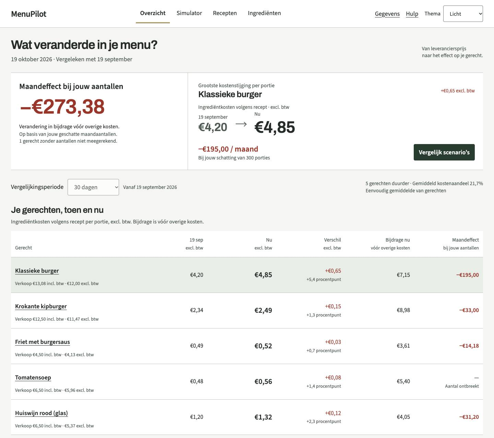
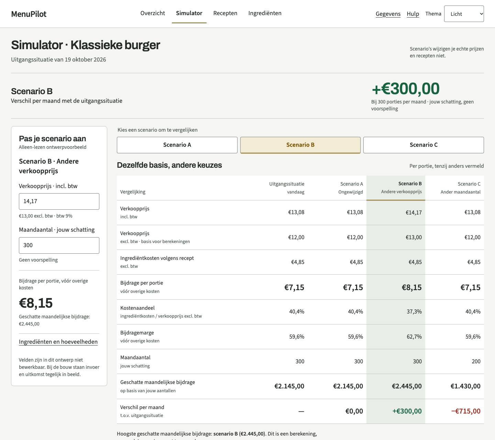
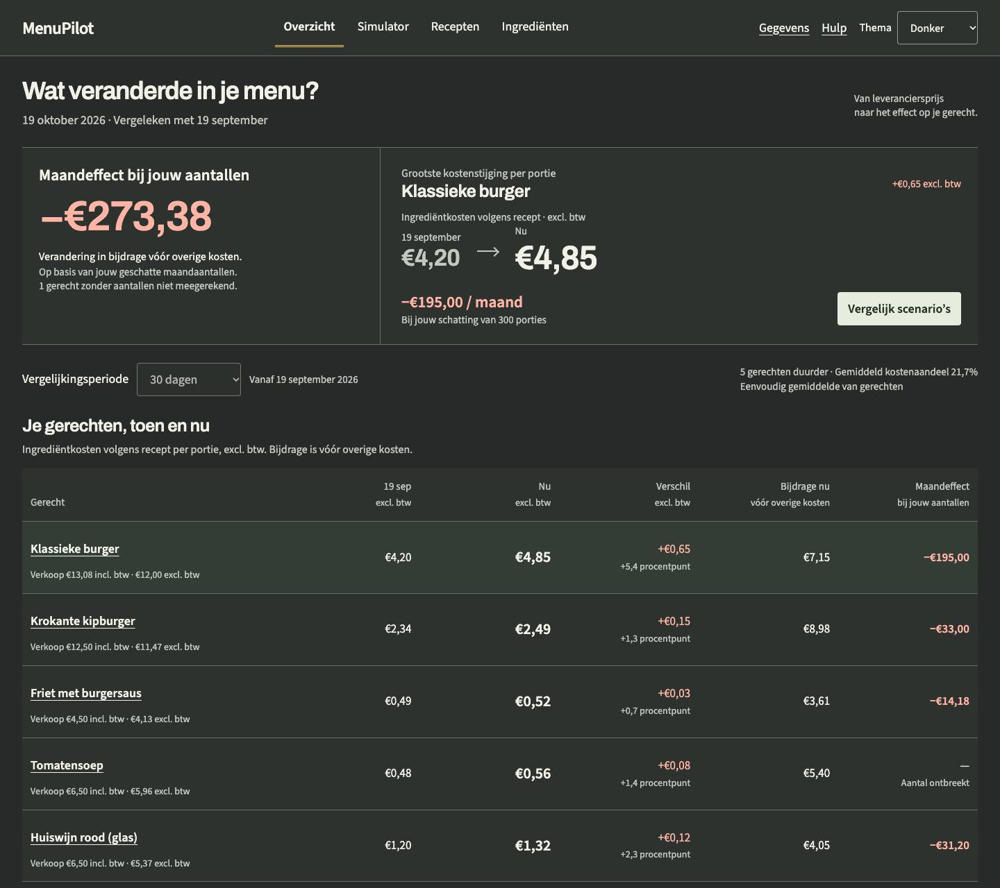
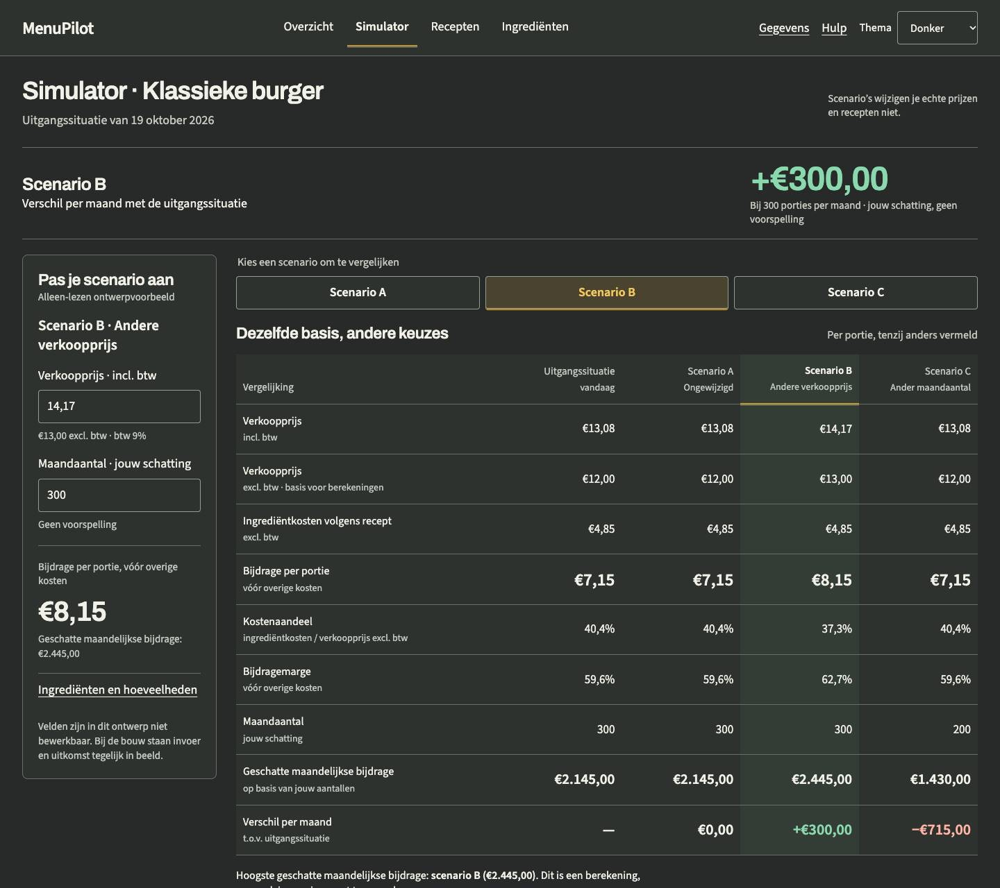

C+ · De keukenlijn
Gekozen richting. Rustige cijfers, twee volwaardige thema’s en meer ruimte voor vergelijking.
Je browser kan de themakeuze niet bewaren.
De thema’s volgen standaard je systeem. Je kunt een eigen keuze bewaren. Afdrukken gebruikt altijd het lichte thema. De bedragen zijn fictief; invoervelden zijn alleen-lezen.
Licht
Overzicht · groot scherm


Simulator · groot scherm


375 pixels


Donker
Overzicht · groot scherm


Simulator · groot scherm

